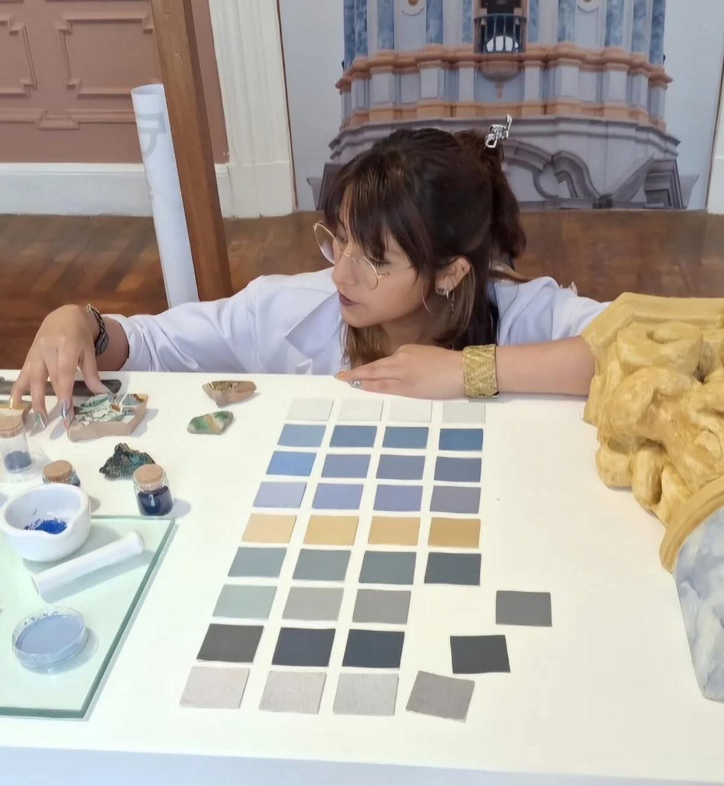

Entrevista a Fabiola Rodríguez
Para Fabiola Rodríguez, restauradora especializada en patrimonio cultural e inmueble, las paredes del Centro Histórico de Lima no son grises; son un lienzo histórico esperando ser recuperado. Su trabajo analizando los estratos pictóricos de las casonas coloniales y republicanas del Damero de Pizarro ha desmontado el viejo mito de una "Lima siempre gris", devolviendo a la ciudad los colores originales con los que fue concebida. Sin embargo, su labor junto a los equipos multidisciplinarios de PROLIMA le ha demostrado que la restauración va mucho más allá de la simple estética y que los verdaderos cimientos de la conservación son de naturaleza social.

Por: Andrea Cauracuri Rengifo
A diferencia de lo que suele pensarse, Rodríguez sostiene que el mayor dilema no radica en los problemas estructurales o técnicos que se resuelven en el campo, sino en el trabajo con la comunidad más próxima al inmueble. Para ella, el éxito a largo plazo de cualquier proyecto depende de que los vecinos entiendan el porqué y el para qué de la restauración, logrando que cuiden el patrimonio de manera genuina y no solo desde una perspectiva turística. Lamentablemente, advierte que los programas actuales suelen enfocarse demasiado en el embellecimiento y la puesta en valor para el visitante, descuidando un trabajo social sostenido que cale profundo en la población local.
Esta falta de articulación comunitaria genera una notoria dicotomía entre la conservación del patrimonio y la realidad económica de los residentes, quienes terminan creando sus propios métodos de salvaguarda para subsistir el día a día. Rodríguez señala que esta tensión es evidente en zonas como el jirón Andahuaylas, donde los comerciantes informales conviven con la recuperación monumental. Incluso en casos más formales, como el de la Quinta Heeren —adquirida por la Municipalidad para oficinas y turismo—, se evidencia una clara exclusión de los vecinos en los procesos de toma de decisiones, lo que contribuye, al menos parcialmente, al desplazamiento de los residentes tradicionales.
Para equilibrar esta balanza, la restauradora argumenta que tanto el turismo como el comercio deben adaptarse íntimamente a la conservación y ponerse al servicio de las historias que ofrece el Centro Histórico. Afortunadamente, los errores del pasado —donde las marcas modificaban las casonas de manera arbitraria por mero gusto estético— se están corrigiendo gracias a las estrictas directrices de PROLIMA. Lugares como el jirón de la Unión y el Pasaje Santa Rosa demuestran que las marcas comerciales pueden adaptar su línea gráfica a los parámetros patrimoniales, logrando un equilibrio donde los elementos modernos solo se integran si son funcionalmente necesarios y ayudan a una mejor lectura histórica del lugar.
Rodríguez explica que los profesionales deben evaluar el valor histórico, conmemorativo, económico y educativo de cada pieza, colaborando estrechamente con arquitectos e ingenieros. Para ilustrarlo de forma sencilla, utiliza la analogía de un museo que exhibe el vestido de Marilyn Monroe: si el traje tiene una mancha que ocurrió durante su histórica reunión con el presidente Kennedy, limpiarlo sería un error porque destruiría su valor histórico. No se trata de limpiar por limpiar, sino de actuar con criterio frente a los vestigios del pasado.
Rodríguez enfatiza que priorizar la conservación sobre la restauración permite ejecutar procesos mucho menos invasivos y evita el gran riesgo de caer en el "falso histórico". Este peligro ocurre cuando se altera la historia y se presenta algo que jamás existió, simplemente por satisfacer un criterio estético o un gusto contemporáneo, lo cual distorsiona la verdad histórica del inmueble.